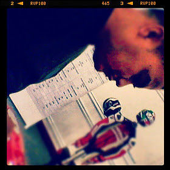

About Me
Currently pursuing a BS degree in Cloud and Systems Administration from Western Governors University (Utah). Coding enthusiast but a web and graphic designer by passion, I have gained valuable experience designing advertising and marketing materials which includes brochures, logos, posters, advertisements, product packaging, web sites and booklets. I am proficient in using industry-standard design softwares that includes Photoshop, Illustrator and InDesign. I have experience in web design using popular CMS like WordPress and have programming skills on both PHP and SQL (MySQL). I also have a working knowdlege of preflighting files, pre-press and of the offset printing process.
I take great pride in the design work I create and strive to deliver an effective and focused, and on-target products that can fit any of the client's identity and goals.
I am creative, reliable and hardworking who can work well in a team environment or individually on projects. My career goal is to learn and grow as a designer for both print and the web while utilizing creaitivy, knowledge, education and people skills to benefit the client.
On technical side, I am proficient in C/C++ and C#. Efficient of both the Mac OS and Windows platform and well versed on computer networking and troubleshooting.
View my online portfolio.